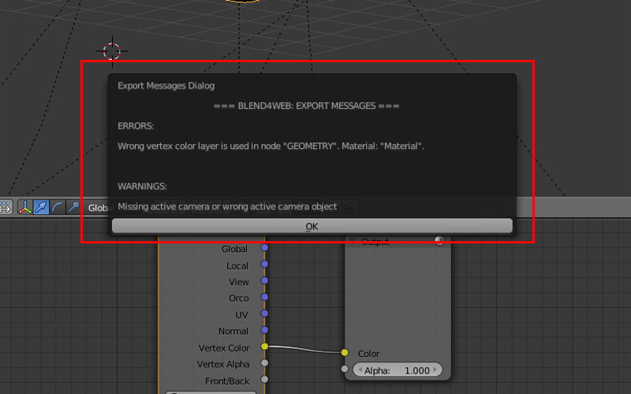
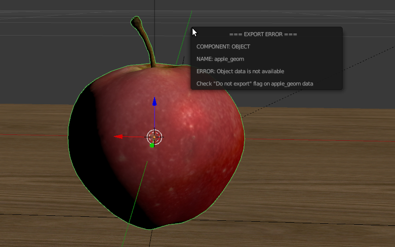
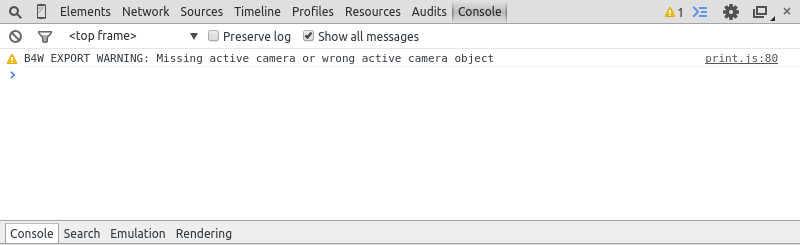

插件¶
本地开发服务器¶
本地开发服务器的设置中可以在 File > User Preferences... 找到 (快捷键 Ctrl-Alt-U) 。在这里，您可以更改端口号被用来运行开发服务器（默认情况下6687），可随Blender启动开启。要做到这一点，在插件上启用 Run on Startup 选项运行。

在改变了本地开发服务器设置后需要重新启动Blender。
有可能为本地服务器来处理外部请求。要做到这一点启用 Enable External Requests 选项 。
如果您选择不自动启动服务器，你总是可以手动启动：去 Render 选项卡，然后按 Development Server 面板上的 Start Server 按钮：

注解
如果本地开发服务器无法启动。在这种情况下，相应的消息将被显示，而不是 Start Server 按钮。
如果服务器无法运行，将显示一条错误消息，说明了原因：

如果服务器端口已被一些其他的应用程序可能会出现此错误。
按 SDK Index 按钮，在浏览器中打开Blend4Web SDK的索引网页。本页面可在 http://localhost:6687 访问。

然后，对于您的操作系统的默认浏览器将启动。
Project Manager 按钮可用于打开 项目管理器.
Fast Preview 按钮加载当前正在Blender打开的场景到 查看器.
服务器可以通过按下 Stop Server 按钮被停止。当Blender被关闭也停止。
运行浏览器和演示¶

The index page contains the following links:
- Project Manager;
- Code Snippets, a list of demo applications. A WebGL-capable browser is required to run these apps;
- WebGL Report page for checking the level of WebGL support provided by the web browser;
- User Manual, available in both HTML and PDF form in three languages;
- API Reference that contains descriptions for every API module and method provided with the Blend4Web engine;
- Tutorials;
- FAQ page where you can find answers to some of the most basic questions regarding using the engine;
- Community Support Forums;
- Support Email (only available in PRO version).
注解
如果SDK应用程序显示不正确，或显示错误消息，请按照 启动时的问题 部分中的说明。
输出格式¶
场景制作完成后，需要将其转换成由Blend4Web引擎所支持的格式。
目前，两种格式都支持：JSON和HTML。
JSON¶
导出场景到这种格式会创建一个 .json （JavaScript对象符号）文件，其中包含所有导出的数据结构和链接到外部资源（图片，声音等等），还有一个 .bin 文件包含二进制格式的模型数据阵列。
如果媒体资源被 打包到.blend文件, 他们会在导出过程中解压，并在项目的目录放置在隐藏的 ../tmp/ 文件夹中（SDK目录内）。应当注意的是，这样的话文件的名称将被自动地改变，工作的时候可能变得复杂。
建议将所有资源存储在SDK目录中一个专门的文件夹，例如，它可以被称为 projects/project_name/assets 。
注解
按照安全因素考虑，开发服务器只能访问SDK文件夹。如果媒体数据被放置在另一个文件夹，服务器将无法在部署的时候导出（即使是在Blender内工作正常）它。
外部资源路径应该是相对的。如果不是这种情况，执行 File > External Data > Make All Paths Relative 命令，否则在其他电脑上打开这个项目会有问题。
这是一个复杂的项目，其中包括多个场景，并且需要JavaScript编程的主要格式。对应的部分项目开发进一步说明在 corresponding section.
导出选项¶
- 自动保存Blend文件
自动保存从导出的实际文件。 默认情况下启用 。自动保存正在执行的导出之后，以保证目前的混合文件和导出的文件内容之间的一致性。此外，相对路径导出的文件被保存方便。
{kind=link}
- 严格模式
这种模式可以防止输出是否有适用于用户的注意力的任何错误或消息。这种模式使能了
Strict Mode在导出菜单设置：
{kind=link}
如果有用户的注意力任何非关键性的错误或消息，一个对话窗口会显示如下：
{kind=link}
- 输出转换媒体
此选项可用于HTML导出。当启用该选项，不同格式的转换后mediafiles都写在HTML文件。使用不同的mediafiles是必不可少的，而使用HTML导出创造跨浏览器和跨平台的应用程序。这些文件可以由创建 转换器.

- 在预览器中运行
自动启动场景查看，导出的场景添加到它。
当使用 本地开发服务器, 可以在场景预览器中打开导出的
.json文件。要做到这一点，选择在导出时Blend4Web SDK文件结构中的任何路径。应该于SDK里面的目录。如果没有，这个选项将不会显示在菜单中。另外，如果本地开发服务器宕机也不会显示。
{kind=link}
初始化错误¶
可能出现安装的加载项或当一个场景是在Blender打开时初始化错误。在这种情况下，一个对话窗口，显示错误的描述。

错误信息 |
原因 |
|---|---|
| Blend4Web initialization error! Add-on is not compatible with the PLATFORM platform. | 该Blend4Web插件和该平台不兼容。 |
| Warning: Blender version mismatch. Blender VER_REQUIRED is recommended for the Blend4Web add-on. Current version is VER_CURRENT. | 警告有关可能不符合当前Blender的版本号。它建议使用VER_REQUIREDBlender版本。当前的版本是VER_CURRENT。 |
| Incorrect add-on directory name. | 插件目录的不正确的名称。在存档附加结构已损坏，或归档的全部被打乱。 |
兼容性错误¶
当试图在浏览器中查看一个场景，在下列情况下兼容性错误可能出现：如果版本的附加用于导出场景不同版本Blend4Web引擎，它尝试加载的场景，或者.bin文件不对应于.json文件。
相比版本的插件与该场景被导出引擎版本太旧。场景将不会被加载。我们建议您使用引擎和插件的最新版本。
错误信息 |
原因 |
|---|---|
| JSON version is too old relative to B4W engine: VER_OLD, required: VER_NEW. Reexport scene with the latest B4W add-on to fix it. | 插件版本，与场景被导出版本相比太旧：VER_OLD。该引擎要求：VER_NEW。场景将不会被加载。我们建议您使用的加载项的最新版本重新导出场景。我们也建议使用引擎的最新版本。 |
| JSON version is a bit old relative to B4W engine: VER_OLD, required: VER_NEW. Some compatibility issues can occur. Reexport scene with the latest B4W add-on to fix it. | 插件版本与场景的导出版本，是有点老了：VER_OLD。该引擎要求：VER_NEW。场景将被载入像往常一样，但是可能会出现一些错误。我们建议您使用的加载项的最新版本重新导出场景。我们也建议使用发动机的最新版本。 |
| B4W engine version is too old relative to JSON. Can’t load the scene. Update your engine version to fix it. | 相比版本的插件与该场景被导出引擎版本太旧。场景将不会被加载。我们建议您使用引擎和插件的最新版本。 |
| B4W engine version is a bit old relative to JSON. Some compatibility issues can occur. Update your engine version to fix it. | 相比版本的插件与该场景被导出引擎版本是有点老了。场景将被载入像往常一样，但是可能会出现一些错误。我们建议您使用引擎和插件的最新版本。 |
| BIN version does not match to JSON version: VER_BIN, required: VER_JSON. Couldn’t load the scene. Reexport scene to fix it. | .bin文件的版本太旧相对于.json文件：VER_BIN，.json文件版本VER_JSON。场景将不会被加载。我们建议您再导出侑场景。 |
| BIN version does not match to JSON version: VER_BIN, required: VER_JSON. Some compatibility issues can occur. Reexport scene to fix it. | .bin文件的版本有点老相对于.json文件：VER_BIN，.json文件版本VER_JSON。可能会出现一些不兼容的错误。我们建议您再导出侑场景。 |
关键导出错误¶
在导出的情况下错误的 BLEND4WEB EXPORT ERROR 对话框出现描述该问题：

COMPONENT-组件（对象，网格，材质，纹理等），才造成了导出的错误的类型。
NAME-组件名称。
ERROR-在发生问题的简短描述。
{kind=link}
错误信息 |
原因 |
|---|---|
| Export to different disk is forbidden | 导出到位于不同的磁盘上的目录被禁止 |
| Incompatible objects with a shared mesh; The OBJECT_NAME object has both vertex groups and a shared mesh | 不兼容的对象有一个共享的网格。不允许导出的对象既具有共享网格和顶点组。例外：导出是可能的，如果一个对象具有 |
| Incorrect mesh; Corrupted file: Wrong vertex color values | 损坏的文件：不正确的顶点颜色值。 |
| Loading of resources from different disk is forbidden | 从不同的磁盘资源的装载是被禁止的。 |
| The material has a normal map but doesn’t have any material nodes | 节点材质采用 |
| The mesh has a UV map but has no exported material | 该网格具有UV图层但并无材质导出。 |
| The mesh has a vertex color layer but has no exported material | 该网格具有顶点颜色层，但有无材质导出。 |
| No such file or directory | 文件或目录不存在。 |
| Permission denied | 没有访问权限到当前目录。 |
| Wrong edited normals count; It doesn’t match with the mesh vertices count | 编辑法线的数目不匹配的网格顶点的数量。执行 |
| Wrong overridden bounding box; Check the mesh’s bounding box values | 错尺寸覆盖网格的时指定 |
非致命导出的错误¶
在对比上述所列临界导出错误，这些错误不会禁止导出，但可以使显示不正确的场景。这些消息可以在浏览器的控制台中查看（与打开 F12) 当一个场景被加载。该消息是这样的：
B4W EXPORT ERROR: Error message

错误信息 |
原因 |
|---|---|
| Canvas texture ID NAME already exists. Texture NAME. | 该 |
| Dupli group error for object OBJECT_NAME. Objects from the GROUP_NAME dupli group on the OBJECT_NAME object cannot be exported | 其中没有被选定为重复的OBJECT_NAME对象的GROUP_NAME组中的对象可以被导出。导出许可的组中的至少一个对象，或删除的组的复制是必需的。 |
| Empty canvas texture ID for texture NAME. |
|
| Empty material slot in node “NAME”. Material: “NAME”. | 在“名称”节点空的材质插槽。 |
| Environment map in the “NAME” world texture slot cannot be a movie. | 环境贴图无法显示一个视频文件。 |
| Ignoring LODs after empty LOD for the NAME object. | 按照空槽，所有LOD对象被忽略（在LOD对象列表对象的名称）。 |
| Incomplete mesh NAME; Dynamic grass vertex colors required by material settings | 该 |
| Incomplete mesh; Material settings require vertex colors | 该 |
| Incorrect NLA script, falling back to simple sequential NLA. | 不正确的 NLA 脚本。返回到简单的序列 NLA。 |
| Incorrect vertex animation for mesh NAME. Object has no vertex animation. | 对象的顶点动画导出选项，但没有顶点动画。 |
| Incorrect vertex animation for mesh NAME. Unbaked “ANIM_NAME” vertex animation. | 顶点动画导出是打开的网格，但ANIM_NAME动画没有任何帧。 |
| Incorrect mesh NAME; Wrong group indices | 该网格具有分配给不存在的顶点顶点组的顶点。 |
| Incorrect mesh NAME; Wrong vertex positions | 损坏的文件：不正确的顶点坐标值。 |
| Incorrect mesh NAME; Wrong normals | 损坏的文件：不正确法线值。 |
| Incorrect mesh NAME; Wrong tangents | 损坏的文件：不正确正切值。 |
| Incorrect mesh NAME; Wrong texture coordinates | 损坏的文件：不正确的纹理坐标值。 |
| Incorrect mesh NAME; Wrong vertex group weights | 损坏的文件：不正确的顶点组权重值。 |
| Incomplete vehicle. The NAME vehicle doesn’t have any chassis or hull | 模型的 NAME 车辆是不完整的，因为它应该包含一个 |
| Incomplete vehicle. The NAME vehicle requires at least one bob | 模拟的NAME车辆是不完整的，因为它应该含有至少一种 |
| Incomplete vehicle. The NAME vehicle requires at least one wheel | 模拟的NAME车辆是不完整的，因为它应包含至少一个 |
| Invalid link found in node material. Material: “NAME”. | “NAME” 节点材料包含节点之间的不正确连接。 |
| No image in the NAME texture. [Material: NAME.] | 纹理有没有图像。 |
| No texture for the NAME particle settings texture slot. | 在粒子设置“纹理槽没有纹理。 |
| No texture in the NAME world texture slot. | 在NAME世界纹理插槽没有纹理 |
| No texture in the texture slot. Material: NAME. | 有一个在材料的纹理插槽没有纹理 |
| Node material invalid: “NAME”. Check sockets compatibility: “FROM_NODE” with “TO_NODE”. | 节点材质错误：之间的联系的输入和输出类型 |
| Object “NAME” hasn’t renderable data. Converted to EMPTY. | 名为“NAME”的对象是失效的，比如没有多边形。对象的类型已更改为空。 |
| Object: “NAME” > Constraint: “CONSTRAINT_TYPE”. Check constraint settings. | The object “NAME” has a constraint of type “CONSTRAINT_TYPE”, which isn’t configured properly. |
| Object “NAME” has the mesh with shape keys. The property “Relative” of mesh has been enabled. | 名为“NAME”的对象具有按键形状的网格。该网具有“相对”属性，使这是被禁止的。 |
| Object “NAME” has no data or data is broken. Change object type to EMPTY. | 名为“NAME”的对象是失效的，比如没有多边形。对象的类型已更改为空。 |
| Packed media “FILE_NAME” has not been exported to “CONVERTED_FILE_PATH” | 填充媒体文件“FILE_NAME”不能被转换为“CONVERTED_FILE_PATH”。请解压缩这个文件，并将其转换。 |
Particle system error for “NAME”;
The “NAME” vertex color specified
in the from field is missing in
the last of the “OBJECT_NAME”
object’s vertex colors |
该名称顶点颜色是在指定 |
Particle system error for “NAME”;
The “NAME” vertex color specified
in the to field is missing in
the list of the “OBJECT_NAME”
object’s vertex colors |
这个NAME顶点颜色中指定 |
Particle system error for “NAME”;
The “NAME” vertex color specified
in the “to field is missing in
the “OBJECT_NAME” object
(“GROUP_NAME” dupli group) |
这个NAME顶点颜色中指定 |
| Particle system error for object “NAME”. Invalid dupli object “OBJECT_NAME”. | 粒子系统错误的对象名称。无效DUPLI对象OBJECT_NAME。 |
| Particle system error. Unsupported render type “TYPE” for the HAIR particles “NAME” on object “OBJECT_NAME”. Particle system removed. | Particle system error. Unsupported render type TYPE for the HAIR particles PSYS_NAME on object NAME. The particle system has removed. |
| Particle system error. Unsupported render type “TYPE” for the EMITTER particles “NAME” on object “OBJECT_NAME”. Particle system removed. | Particle system error. Unsupported render type TYPE for the EMITTER particles PSYS_NAME on object NAME. The particle system has removed. |
| Particle system error for “NAME”. Dupli object isn’t specified. | 粒子系统错误：没有对象被选中作为一个粒子。 |
| Particle system error for “NAME”. Dupli group isn’t specified. | Particle system error: no group is selected as a particle. |
| Particle system error for “NAME”. Wrong dupli object type “TYPE”. | 被选择为粒子不适当类型的对象。支持的类型： |
| Particle system error for “NAME”. Dupli object “NAME” has not been exported. | The NAME object which is selected
as a particle can not be exported (the
Do not export checkbox is set). |
| Particle system error for “NAME”. The “GROUP_NAME” dupli group contains no valid object for export. | 被选择作为粒子的GROUP_NAME DUPLI组包含导出没有有效的对象。无论这样的对象具有 |
| Sound file is missing in the SPEAKER object “NAME”. Converted to EMPTY. | 扬声器没有附加声音。物体的类型已更改为空。 |
| The lamp object “NAME” has unsupported AREA type. Changed to SUN. | The lamp object “NAME” has unsupported AREA type. Lamp type has been changed to SUN. |
| The main scene NAME can not be rendered by another scene. Material NAME has been removed. | 主场景名称不能被其他场景渲染。材料名称已被删除。 |
| The NAME action has decimal frames. Converted to integer. | 操作具有十进制的帧。转换为整数。 |
| The NAME armature modifier has a proxy object as an armature. Modifier removed. | 一个骨架修改器具有一个代理对象作为骨架。 |
| The NAME armature modifier has no armature object or it is not exported. Modifier removed. | The NAME Armature modifier has no
armature object or it is not exported.
Modifier removed. |
该名称曲线修正没有对象。修改删除。 |
该名称曲线修正没有对象。修改删除。 |
| The NAME curve modifier has unsupported curve object. Modifier removed. | 该名称的曲线修饰有不支持的对象。修改删除。 |
| The NAME object has the NAME armature modifier and a vertex animation. Modifier removed. | Name对象既有顶点动画和不支持的电枢修改。其结果是，该改性剂已被删除。 |
该名称 |
The NAME object has the NAME armature modifier. The armature object in this modifier isn’t specified or belongs to a not exported scene. Modifier removed. |
| The NAME LAMP node has no lamp object. Material: NAME. | 在指定的名字错了对象 |
| The NAME node is not supported. The NAME material will be rendered without nodes. Material: NAME. | 引擎不支持该节点与该名字，并因此节点材料将被关闭。经常出现这种情况时，循环节点使用。 |
| The NAME object has NAME armature modifier which references the wrong group. Modifier removed. | 一个物体应该是在同一组作为骨架，或两个物体应该明确地出现在场景中。 |
| “TEXTURE_TYPE” texture type is not supported for world “NAME”. | 不支持TEXTURE_TYPE纹理类型为世界WORLD_NAME |
| Using B4W_REFRACTION node NODE_NAME with incorrect type of Alpha Blend. Material: NAME. | 用不正确的透明混合属性节点材质。 |
| Wind bending: not all vertex colors exist for “NAME”. Properties were set to default values. | 风弯曲参数设置：所有指定的顶点颜色层应该存在。 |
| Wind bending: vertex colors weren’t properly assigned for “NAME”. Properties were set to default values. | 风弯曲参数设置：它必须指定或者所有顶点颜色层的名称 ( |
| Wrong “Height Map” input for the “NAME” B4W_PARALLAX node. Only link from the TEXTURE node with a non-empty texture is allowed. | 错误的数据传递给该名称的“高度贴图”输入 |
| Wrong texture coordinates type in texture NAME. [Material: NAME.] | 下列坐标类型的图像纹理支持： |
| Wrong F-Curve interpolation mode for ACTION_NAME. Only BEZIER, LINEAR or CONSTANT mode is allowed for F-Curve interpolation. Switch to BEZIER. | The following types are supported for
action interpolation mode: BEZIER,
LINEAR and CONSTANT. |
| Wrong vertex animation vertices count for mesh NAME. It doesn’t match with the mesh vertices count for “ANIM_NAME”. | 顶点动画导出被启用，但顶点在焙烤ANIM_NAME动画帧的数目不匹配网格顶点编号。可能的解决方案是“重新烘焙”的动画。 |
其他消息¶
这些消息可以在浏览器的控制台中查看（与打开 F12 一样) 当一个场景被加载。该消息是这样的：

B4W EXPORT警告：导出消息，这就需要用户注意
{kind=link}
错误信息 |
原因 |
|---|---|
| Material tangent shading is enabled, but object’s mesh has no UV map. | The material has the option “Tangent Shading” enabled, which always requires a UV map. |
| Missing active camera or wrong active camera object | 在场景中没有激活的( |
| Missing world or wrong active world object | 应该有至少有一个数据块的世界场景中。 |
| NAME particle settings has the NAME texture rendering a scene. It has been replaced by the default texture. | 粒子设置数据块名称包含被用于渲染场景到纹理名称。此纹理被替换为默认的纹理。 |
| The action NAME has no fcurves. | The action with the name “NAME” has no fcurves. |
| The “NAME” camera has unsupported PANORAMIC type. Changed to PERSPECTIVE type.” | 不支持全景相机。立体模式来代替。 |
| Unsupported texture type or texture is missing for Lens Flare material “NAME” | 不支持的纹理类型或纹理缺少镜头光晕材质 “NAME” |
| Use of ENVIRONMENT_MAP as diffuse color is not supported. Use as mirror instead. | The ENVIRONMENT MAP texture can not be used as diffuse color. Disable the Diffuse > Color and enable the Shading > Mirror option on the Textures > Influence panel to use this texture as mirror map. |
插件翻译¶
还有就是可以翻译插件到Blender所支持的语言。为了做到这一点，重命名文件“empty.po”，它位于目录SDK/blender_scripts/addons/blend4web/locales,下表中的名称之一：
文件名 |
语言 |
|---|---|
| ru_RU.po | 俄语 |
| ja_JP.po | 日本 |
| en_US.po | 英语 |
| nl_NL.po | 荷兰 |
| it_IT.po | 意大利 |
| de_DE.po | 德语 |
| fi_FI.po | 芬兰 |
| sv_SE.po | 瑞典 |
| fr_FR.po | 法国 |
| es.po | 西班牙语 |
| ca_AD.po | 加泰罗尼亚 |
| cs_CZ.po | 捷克 |
| pt_PT.po | 葡萄牙语 |
| zh_CN.po | 简体中文 |
| zh_TW.po | 繁体中文 |
| hr_HR.po | 克罗地亚 |
| sr_RS.po | 塞尔维亚 |
| uk_UA.po | 乌克兰 |
| pl_PL.po | 波兰 |
| ro_RO.po | 罗马尼亚 |
| ar_EG.po | 阿拉伯 |
| bg_BG.po | 保加利亚语 |
| el_GR.po | 希腊语 |
| ko_KR.po | 朝鲜的 |
| ne_NP.po | 尼泊尔 |
| fa_IR.po | 波斯语 |
| id_ID.po | 印度尼西亚 |
| sr_RS@latin.po | 塞尔维亚拉丁语 |
| ky_KG.po | 吉尔吉斯 |
| tr_TR.po | 土耳其 |
| hu_HU.po | 匈牙利 |
| pt_BR.po | 巴西葡萄牙语 |
| he_IL.po | 希伯来语 |
| et_EE.po | 爱沙尼亚语 |
| eo.po | 世界语 |
| es_ES.po | 西班牙西班牙 |
| am_ET.po | 阿姆哈拉语 |
| uz_UZ.po | 乌兹别克 |
| uz_UZ@cyrillic.po | 乌兹别克西里尔 |
| hi_IN.po | 印地语 |
| vi_VN.po | 越南 |
然后打开该文件并编辑/翻译。
当翻译准备好了，你可以与我们联系，将他们作为插件的一部分。